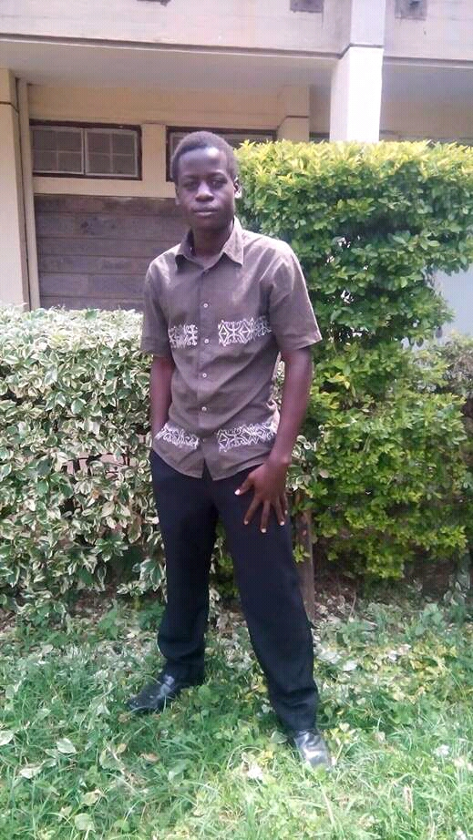
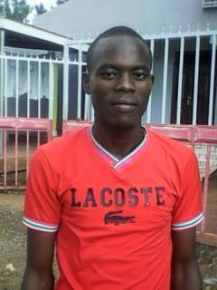
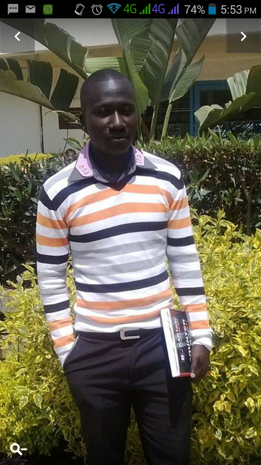
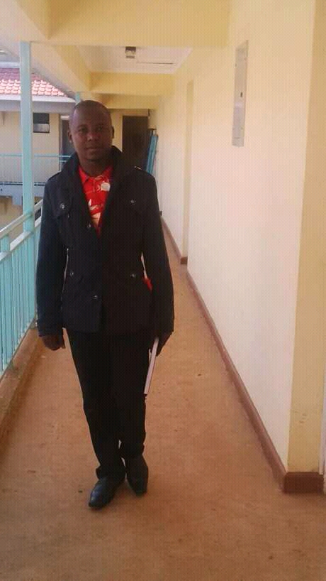
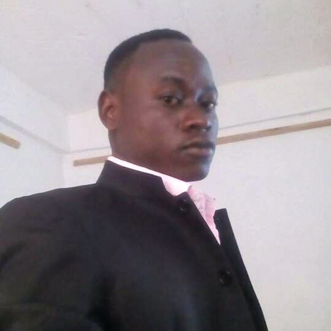
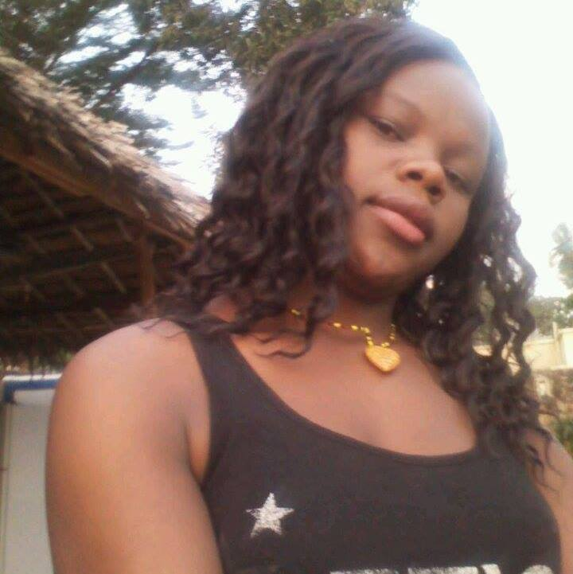
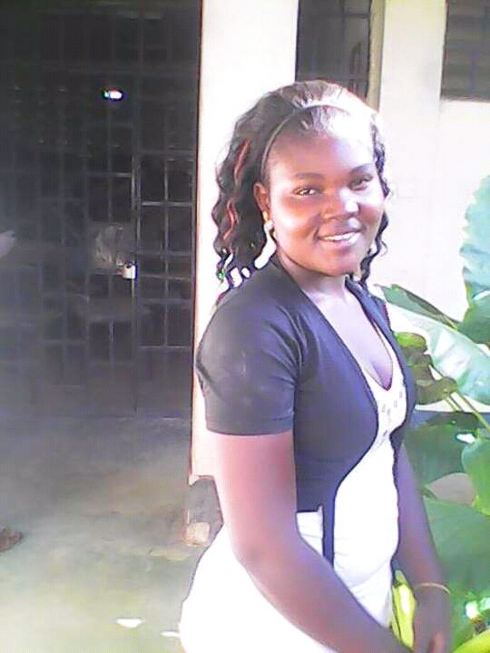

Downe House High School(D.H.H.S) is a christian-based secondary school situated in Homa Bay County,Karachuonyo constituency, Koyugi Location,Bala village.It is one of the Kenya private schools following the the Kenya curriculum of secondary schools.The school was constructed in the year 2008 when the mother primary school,Bala Mercy Primary School was going to send out its first KCPE(Kenya Certificate of Primary Education) pupils to various government secondary schools.
Since Bala Mercy Primary School was under Bala Mercy Children's Centre and Orphanage Project which was taking care of over 500 pupils by then,candidates included,most of the pupils raised their concern on their fear of the end of their education life since they were going to pay high amount of school fees, which almost all could not afford due to their family backgrounds.
With deep love from his heart,care and sympathy for the pupils, REV.DOMINIC OCHOO,the school director saw it best to continue showing his mercy for these less fortunate pupils by ensuring they could continue with their education.The school was to subsidize the fee for every student,both for the B.M primary alumnis and other pupils from other schools who could not afford the public secondary school fees.This boosted the hope in many families who had lost hope for the better future of their children.
In the year 2009,the school began its operation with a good number of turn up of the hopeful students.It started from form one,form two by 2010,2011 form three and finally 2012 it produced its first products of KCSE Examination(Kenya Certificate of Secondary Education) who joined most public colleges and universities under Government Sponsorships and aids from other organisations which were pleased by the students performance.
The school is still making its best effort to produce more useful people to the society,a society full of literates,a society that turns dreams to reality.The church Bala Faith Christian outreach centre-[WORD AFLAME FELLOWSHIP CHURCH MISSION] gives maximum support in ensuring the students have the maximum discipline among themselves,with staffs, parents,outsiders, and good personal relations with God.
Downe House High School(DHHS) was founded and exists to help and serve the needy students. Students under difficult circumstances, disadvantaged, poor and students at Risk by facilitating their Access to Education, social, psychological, economic, legal and spiritual needs through establishment of relevant strategies for Advocacy, Local resource mobilization and support systems.
To improve the quality of life of orphaned, disadvantaged and students at RISK IN AHOLISTIC SENSE.
Downe House High School(DHHS) believes in "a world in which all children realize their full potential in societies that respect and adheres to people's rights and dignity.
The school seeks to achieve lasting improvement in the quality of life of the deprived children, their families and communities to meet their basic needs and increase their ability to survive participate, be protected, develop and benefit from their societies.
Downe House High School(DHHS) has managed to operate with limited financial resources mainly from church contribution individual friends and child sponsorship programme. There is however, huge funding gap as the school seeks to establish means to self-sustainability.
| +254 722 620 384 | |
| +254 721 840 862 | |
| dhhskenya@bmcc.co.ke | |
| +254 722 620 384 | |
| +254 721 840 862 | |
| @downhouseschool | |
| DHHS-kenya | |
| #DowneHouse | |
| +254 722 620 384 | |
| +254 721 840 862 | |
| downhouse.bmcc | |
| www.downehouse.co.ke | |
| bala mercy children's centre |
For purposes of sustainability . Downe House School has the following income generating activities to sustain the programmes under Bala Mercy Children’s Centre
1. The Livestock Farming programme –
Under the families support programme twe work with single mothers /parents who organized themselves into smaller groups and under this groups the families are being assisted with grade goats ,poultry and small revolving loan funds for them to start income and table banking the income from such helps single parents, widows and others in need for sustainability at family level and helps in buying daily learning items needed at home for the children home work and school such as ,pens , books uniforms , teachers motivational as required from each parent by most schools. Under families support units the centre needs Donors for goats, poulty, table banking, and revolving loans.
2. Downe House- BMCC FARM -
Bmcc has acquired 10 ACRES land by awach Tende river side and with the help local irrigation project the Oluch Kimira irrigation scheme the centre intends to invest in the farm as an income generating activity for the following projects.
A- DAIRY FARMING –
B- POULTRY FARMING-
C- FISH FARMING –
D-HORTICULTURE-
E- TRAINING AND EVANGELISM FARMING
The centre intends to promote the Christian way of farming , and use the farming as an evangelism tool to reach out to the communities around the centre with the message of love for the lost that Jesus saves and Jesus is God … many communities has been reached and people baptized In Jesus name acts 2.38,.
3-water processing plant –
Bmcc –is looking for funding to facilitate water processing plant as means of generating income the water source is from the water well drilled at the high school section.
An investment of us $ 16,000 in the water plant will go along way in bringing lots of change in the lives of children .
| 
Ajwang Stephen |
|---|
| 
Ojwang George |
| 
Erick Evance Ochieng |
| 
Clinton Were |
| 
Okal Evance |
| 
Lencer Auma |
| 
Akoth Ursher |
Click here to see more alumi